扩散模型应用·可控生成
封面来自 CivitAI.
GLIGEN
University of Wisconsin-Madison Columbia University Microsoft 2023.01.17
ControlNet
Stanford ICCV 2023 best paper 2023.02.10
尽管文生图大模型的出现让人们能够用自然语言方便地创作，但是文本的控制粒度终究还是比较粗糙，我们希望引入更多种类的条件进行细粒度的控制。显然，在每种条件上都训练一个大模型并不现实，于是人们尝试在基础的文生图模型上引入额外的网络来融入条件，其中，ControlNet[2] 无疑是最为出名的工作。
其实 ControlNet 的思想很简单，就是把原有网络复制一份，通过 zero convolution，即权重初始化为 0 的卷积层连在一起。训练时原权重保持不变，因此 ControlNet 就像一个插件一样，随时可以插上或者去掉。zero convolution 的设置是为了避免训练初期破坏了原模型的生成能力。
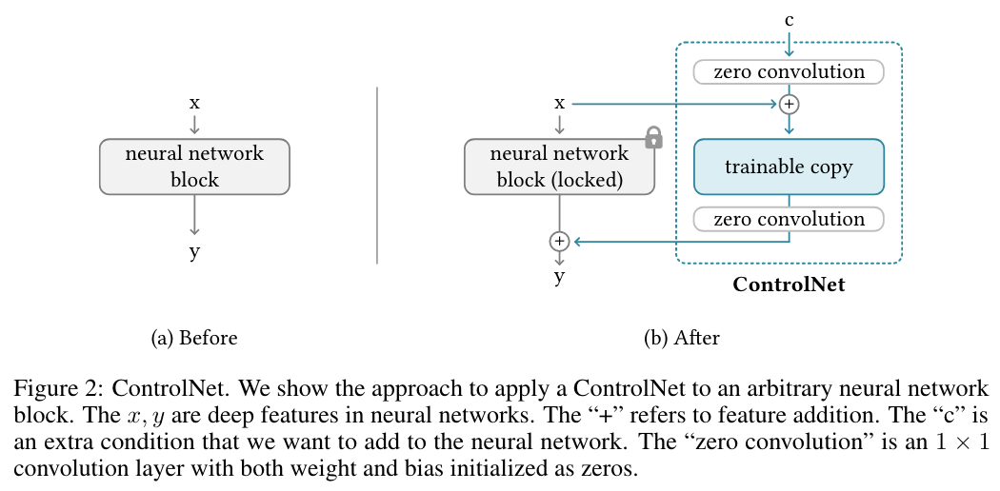
具体到 Stable Diffusion 上，作者只复制了 encoder 部分，并将对应分辨率的特征加到了 decoder 部分，如下图所示：
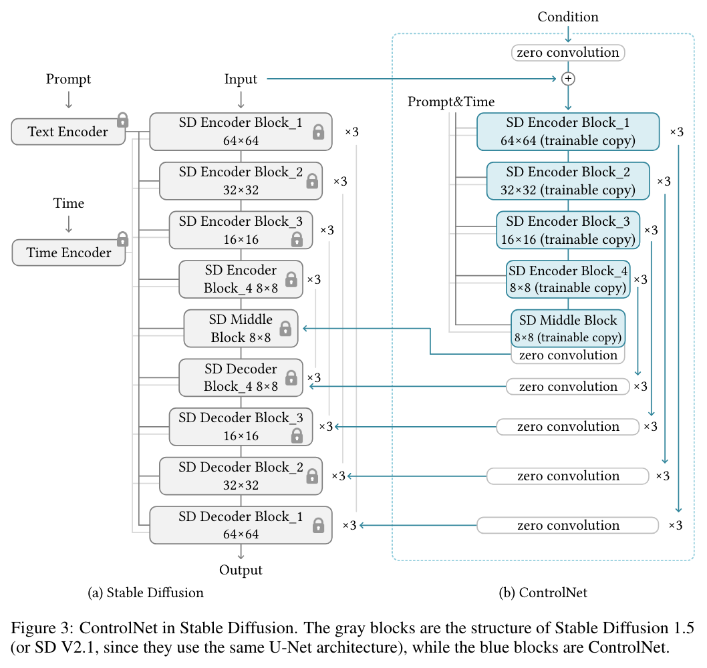
这样设计的好处在于训练时梯度无需回传到原来的 encoder 之中，节省计算量。
值得一提的是，作者在 GitHub Discussion 中详细说明了他为什么选择用这样的架构设计。首先，考虑到训练的可行性，我们倾向于两种选择——微调一个深的预训练网络、或从头训练一个轻量级网络。因此，作者相应的设计了三种结构：
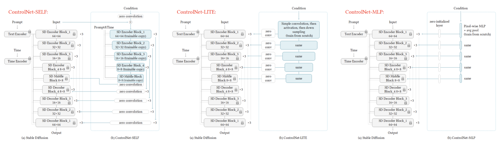
其中，ControlNet-SELF 就是最终的方案，遵从于微调预训练网络的策略；ControlNet-LITE 和 ControlNet-MLP 则遵从从头训练轻量级网络的策略。实验发现，在输入了 prompt 的情形下，三种设计都能生成符合条件的图片；但在没有 prompt 的情形下，只有 ControlNet-SELF 才能识别出条件图片的语义，并生成相应的图片。当然，由于我们平时使用 Stable Diffusion 时都是写了 prompt 的，所以其实用轻量级网络作为 ControlNet 也未尝不可，只是作者认为一个生产级别的模型最好具备语义识别能力，这样更加的 robust.
另外，加入 ControlNet 后，Stable Diffusion 就有了两个条件——文本和 ControlNet 的条件，这会给 classifier-free guidance 的使用带来一点麻烦。我们知道 classifier-free guidance 会计算两个分支——有条件分支 \(\epsilon_\theta(x_t,c_t,t)\) 和无条件分支 \(\epsilon_\theta(x_t,\varnothing,t)\)，二者做线性组合： \[ \hat\epsilon=\epsilon_\theta(x_t,\varnothing,t)+\beta_\text{cfg}(\epsilon_\theta(x_t,c_t,t)-\epsilon_\theta(x_t,\varnothing,t)) \] 在加入 ControlNet 之后，有条件分支变成了 \(\epsilon_\theta(x_t,c_t,c_i,t)\)，而无条件分支产生了两种选择：\(\epsilon_\theta(x_t,\varnothing,\varnothing,t)\) 或 \(\epsilon_\theta(x_t,\varnothing,c_i,t)\). 换句话说，ControlNet 可以选择放入无条件分支，也可以选择不放。哪种选择更好呢？
默认情况下，ControlNet 是放入了无条件分支的。但在用户没有给出 prompt 的情况下，如果仍然将 ControlNet 放入无条件分支，则会导致两个分支变成一样的，都是 \(\epsilon_\theta(x_t,\varnothing,c_i,t)\)，因此这时 ControlNet 不应放入无条件分支。但实验发现这么做会导致生成的图片过饱和，因此作者提出了 CFG Resolution Weighting，对 ControlNet 输出的特征加权，这一模式被作者称作 Guess Mode. 另外，在 stable diffusion webui 的插件中，ControlNet 其实有三种使用方式：Balanced、My prompt is more important 和 ControlNet is more important. 三者区别如下：
- Balanced：默认模式，ControlNet 放入无条件分支，没有 weighting；
- My prompt is more important：ControlNet 放入无条件分支，有 weighting；
- ControlNet is more important (Guess Mode)：ControlNet 不放入无条件分支，有 weighting.
尽管 ControlNet 是基于 Stable Diffusion 这样的大规模预训练模型微调的，其训练时间还是比较可观的：
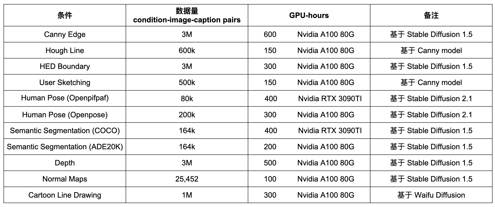
点击查看 ControlNet 的生成样例（摘自论文）
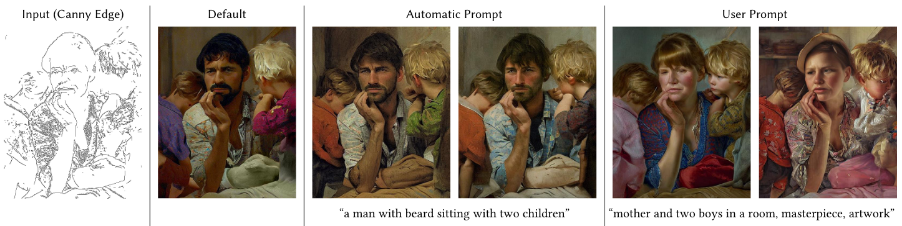
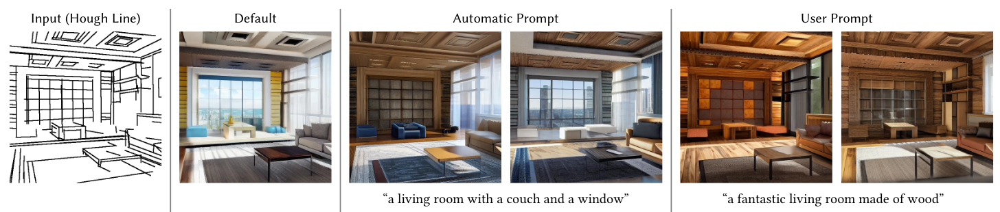
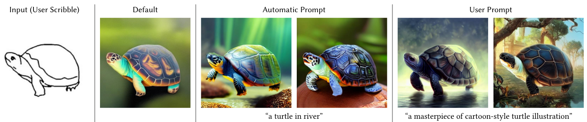
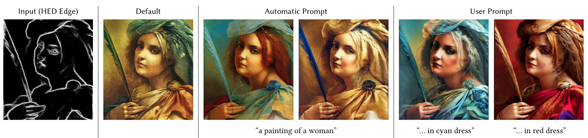
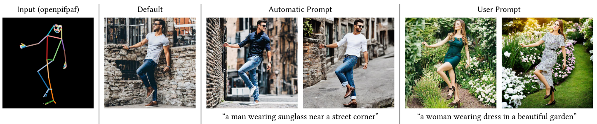
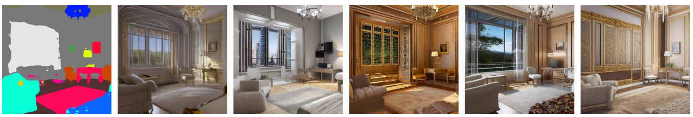
Mixture of Diffusers
2023.02.05
- 动机： 与 MultiDiffusion 类似，希望在同一张图片的不同区域使用预训练扩散模型，从而扩展图片尺寸或实现复杂构图的分区域控制。
- 方法： 也与 MultiDiffusion 类似，只不过是对预测的噪声做加权平均（而不是对去噪结果做）。实测效果比 MultiDiffusion 更好一些。
T2I-Adapter
PKU Shenzhen Tencent AAAI 2024 2023.02.16
与 ControlNet 类似，T2I-Adapter[3] 也是使用额外网络为扩散模型引入条件，如图所示：
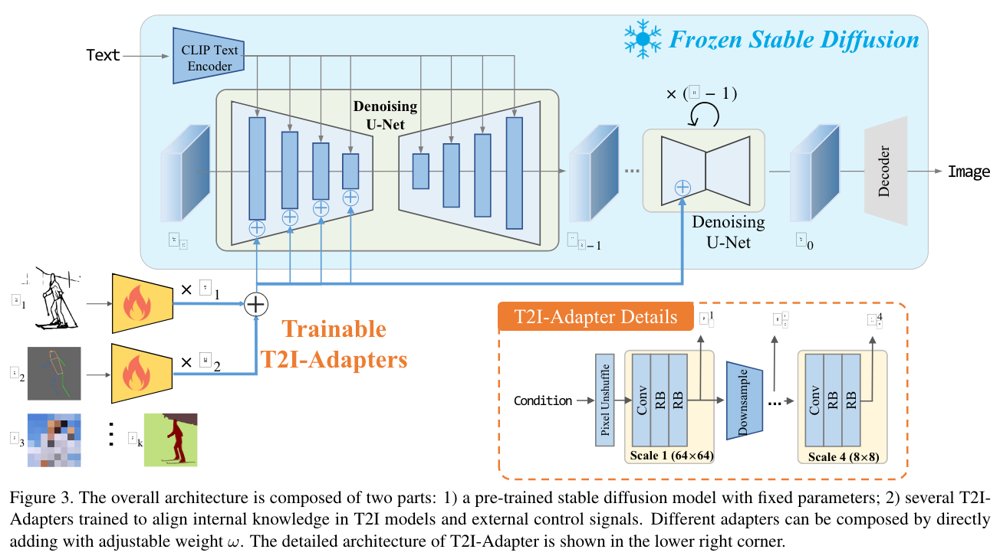
每种条件经由 adapter 网络得到多尺度特征，加到对应尺度的原 Stable Diffusion 的 UNet 之中。不同网络的特征还可以加权和来达到多条件控制的目的（不过权重需要人为调整）。
与 ControlNet 相比，T2I-Adapter 更加轻量（参数量约 70MB，文件大小 308MB），在 4 卡 V100 上训练用时 3 天。
点击查看 T2I-Adapter 的生成样例（摘自论文）
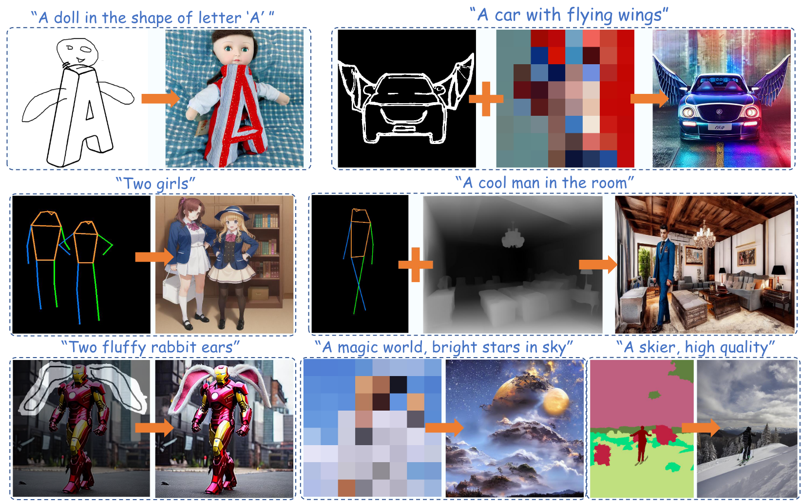
MultiDiffusion
2023.02.16
- 多个扩散模型生成一张图片的不同区域，融合它们的扩散过程使结果和谐、平滑；无需训练或微调，只需要一个预训练扩散模型
- 应用场景：
- 极大扩展生成图像的尺寸和长宽比
- 分区域生成，不同区域可以基于不同条件
- 方法（以扩展生成图像的尺寸为例）：首先将图片划分成有重叠的区域，分别用预训练模型进行一步去噪（t → t-1）；然后将去噪结果做加权平均（原文将其形式化为了一个优化问题，但其解析解就是加权平均）
- 简单粗暴但有效，在需要分区使用扩散模型时可以考虑
Composer
2023.02.22
UniControl
Salesforce NeurIPS 2023 2023.05.18
ControlNet 有一个显著的缺点——对每一种条件都需要训练一个模型。因此，UniControl[7]的作者提出让一个模型同时支持多种条件。
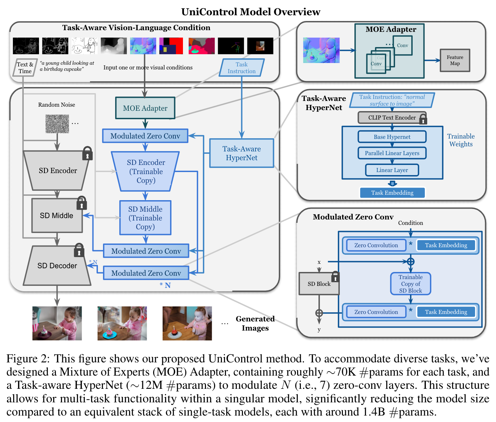
从图中可以看见，UniControl 在 ControlNet 的基础上进行了改造，主要包含三个组件：
- MOE Adapter 对不同种类的条件分别用不同的卷积网络提取特征（这也算 MOE?）；
- Task Aware HyperNet 接收关于任务的文本描述（如 "normal surface to image"），通过 CLIP Text Encoder 编码为 text embedding 后，经过可学习的 Hypernet 得到 task embedding.
- Modulated Zero Conv 使用步骤 2 得到的 task embedding 来调制卷积。
为了训练 UniControl，作者收集并形成了有 20 million 个「图像-文本-条件」三元组的数据集 MultiGen-20M dataset，包括的条件有：canny、hed、sketch、depth、normal、segmentation、bounding box、human skeleton、outpainting. 训练耗时 5000 GPU hours (NVIDIA A100-40G)，与所有条件的 ControlNet 的训练总用时相当，还是非常可观的。
点击查看 UniControl 的生成样例（摘自论文）
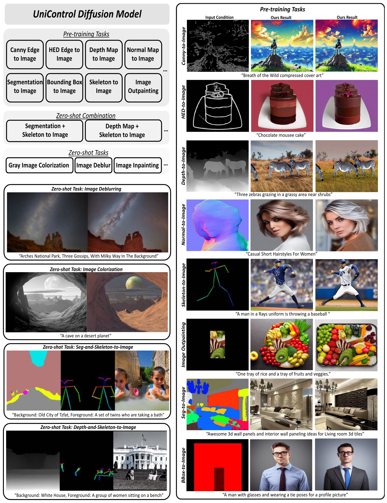
Uni-ControlNet
HKU Microsoft NeurIPS 2023 2023.05.18
Uni-ControlNet[8] 与 UniControl 解决的是同样的问题，而且名字很像，甚至挂在 arxiv 上的时间都是同一天……不过二者的方法还是有所不同的。
Uni-ControlNet 将控制条件分成了两类：
- Local controls：包括边缘图、深度图、分割图等；
- Global controls：指参考图像（用 CLIP image embedding 表示）。
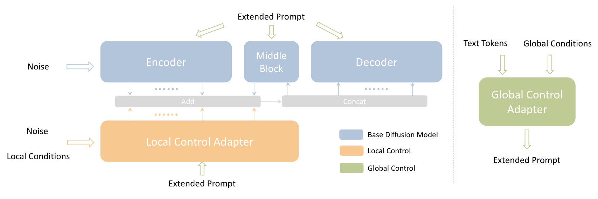
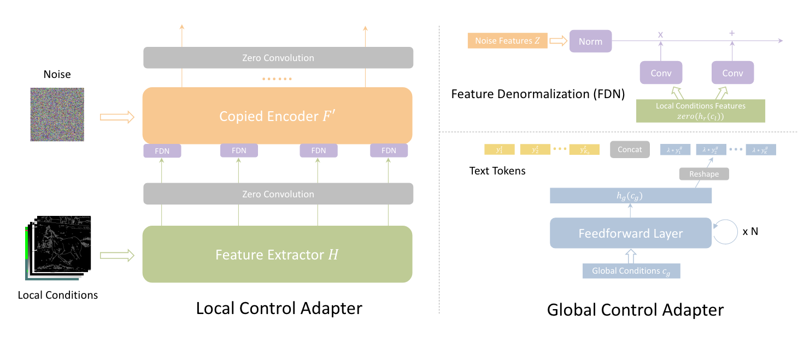
如图所示，对 local controls 和 global controls，Uni-ControlNet 分别使用一个 adapter 来微调：
- Local Control Adapter 提取控制图像的多分辨率特征后，通过调制卷积的方式将其融入 ControlNet 对应分辨率的特征图中；
- Global Control Adapter 将控制信号转换成 tokens 与 text tokens 相拼接后融入模型。
为了训练模型，作者使用的数据集是从 LAION 中随机采样的 10 million 个文本图像对，但作者并未说明训练开销。
点击查看 Uni-ControlNet 的生成样例（摘自官方 repo）

AnyDoor
Alibaba 2023.07.18
AnyDoor[9] 通过提取物体的 ID 与细节特征对 Stable Diffusion 进行微调，实现在指定位置生成指定物体、移动或交换图中已有物体，可以看作是个性化生成+位置可控生成两种应用的结合。
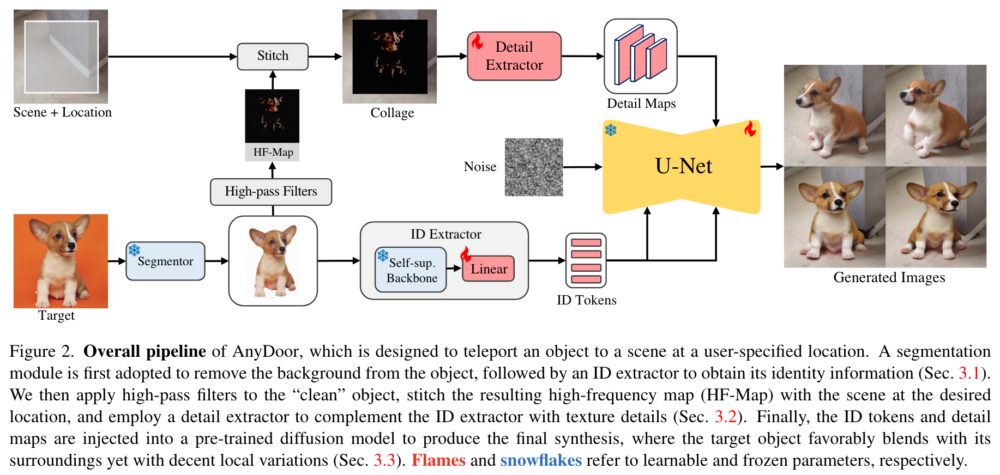
由图可见，在给到扩散模型之前，AnyDoor 由两条分支组成。下面的分支首先分割出感兴趣的物体，然后一个 ID extractor 提取物体的 ID tokens，将作为条件给到扩散模型。上面的分支将场景与分割物体的高通图片缝合在一起，经过一个 frequency-aware detail extractor 来提取保留物体的纹理细节，辅助扩散模型的生成。下面从 ID extractor、detail extractor 和扩散模型条件注入三个方面分别阐述。
ID extractor：在提取 identity 之前，为了避免背景的影响，作者首先使用了分割模型分割出物体（自动化或交互式皆可），实验证明这一步对提取干净可判别的特征有帮助。ID extractor 由一个预训练自监督模型加上可训练的线性映射层构成，充分利用现有的自监督模型强大的特征提取能力。作者选用了 DINO-v2 作为自监督 backbone.
Detail extractor：作者考虑到 ID extractor 会丢弃细节特征，因此设计了一个对细节敏感的细节提取器作为辅助。作者考虑直接将物体图片缝合到场景指定位置处，然后提取特征。这样做虽然提高了生成的保真度，但导致生成的图像缺少多样性。因此，作者决定添加一个高通滤波器作为 information bottleneck，限制这一分支提供太多关于物体的信息。具体而言，作者采用了水平和垂直方向的 Sobel 算子作为高通滤波器。得到缝合图像后，作者使用一个 detail extractor 提取特征，该提取器架构类似于 ControlNet，输出多分辨率的特征图。
扩散模型条件注入：得到 ID tokens 和 detail maps 后，作者需要将其注入预训练的文生图扩散模型 (Stable Diffusion)。作者直接将原本的 text embedding 替换成了 ID tokens，因为 AnyDoor 并不需要文本条件；Detail maps 直接 concat 到 UNet decoder 对应分辨率上。训练时固定 UNet encoder 部分不动而微调 UNet decoder 部分。
进一步地，为了更好的学习物体的外表变化，作者使用了大规模的图像和视频数据进行训练。作者使用目标跟踪和分割技术从视频中得到同一个物体不同角度的图像，弥补缺乏这样的图像数据集的问题。
最后，由于视频数据通常质量较差，作者提出了 adaptive timestep sampling 策略，即在训练时，对于视频数据增加采样更大时间步的概率，而对于图像数据增加采样更小时间步的概率。
点击查看 AnyDoor 的生成样例（摘自官网）


IP-Adapter
Tencent 2023.08.13
虽然文生图大模型获得了巨大的成功，但俗话说“一图胜千言”，有时一张参考图像比一堆文字描述更有效。因此，IP-Adapter[10] 通过引入轻量级 adapter 网络 (22M 参数量)，使得 Stable Diffusion 能够接受参考图像作为 "image prompt"，生成与之类似的图像。IP-Adapter 并不改变 SD 的权重，因此可以直接迁移到其他社区模型上。
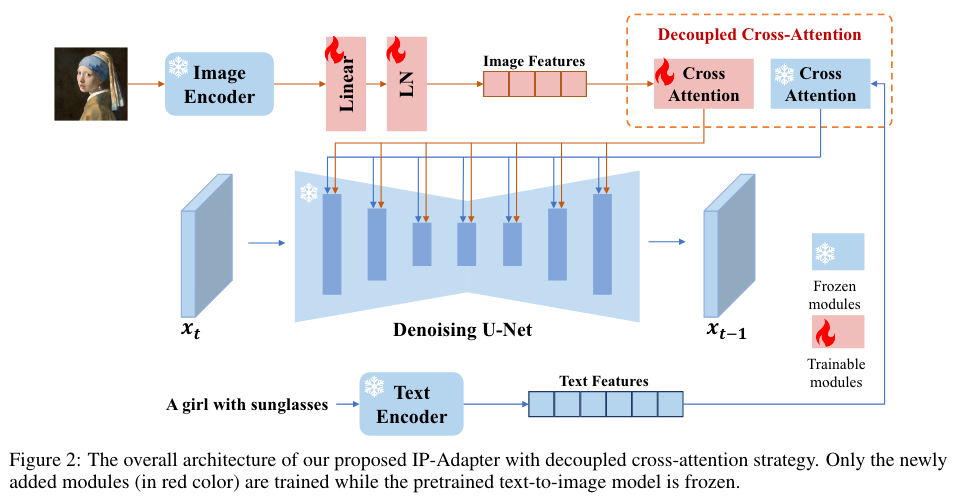
如图所示，IP-Adapter 的核心技术是 decoupled cross-attention. 通过 cross-attention 融入参考图片特征很容易理解，但为什么要 decoupled 呢？这是因为 SD 原本 cross-attention 中的 key 和 value 映射层是适应文本特征的，如果直接使用相当于强行让图像特征对齐到文本特征空间，这是不合理的，因此我们需要新的 cross-attention 层。具体而言，每一个原本的 cross-attention 层都配上一个新的 cross-attention 层，二者用不同的 key 和 value，但用相同的 query，结果相加，即： \[ \mathbb Z^\text{new}=\text{Softmax}\left(\frac{\mathbf Q\mathbf K^T}{\sqrt{d}}\right)\mathbf V+\text{Softmax}\left(\frac{\mathbf Q(\mathbf K')^T}{\sqrt{d}}\right)\mathbf V' \] 其中 \(\mathbf Q=\mathbf Z\mathbf W_q,\,\mathbf K=\mathbf c_t\mathbf W_k,\,\mathbf V=\mathbf c_t\mathbf W_v,\,\mathbf K'=\mathbf c_i\mathbf W_k',\,\mathbf V'=\mathbf c_i\mathbf W_v'\)，\(\mathbf c_t\) 表示文本特征，\(\mathbf c_i\) 表示图像特征。为了加快收敛，\(\mathbf W_k',\mathbf W_v'\) 使用 \(\mathbf W_k,\mathbf W_v\) 初始化。
引入图像特征后，SD 可以接受两个条件——文本与图像，当使用 classifier-free guidance 时，无条件支路直接将两个条件都丢掉： \[ \hat\epsilon_\theta(x_t,c_t,c_i,t)=w\epsilon_\theta(x_t,c_t,c_i,t)+(1-w)\epsilon_\theta(x_t,t) \] 为了训练 IP-Adapter，作者基于 LAION-2B 和 COYO-700M 构建了一个 10 million 大小的数据集，在 8 卡 V100 上训练了 1M steps.
点击查看 IP-Adapter 的生成样例（摘自官网）

Generative Powers of Ten
University of Washington Google Research UC Berkeley 2023.12.04
给定一个场景在不同放大尺度上的文本描述，Generative Powers of Ten[11] 通过操纵、融合扩散模型在多个分辨率下预测的 \(\mathbf x_0\)，使用预训练扩散模型实现不断放大 (zoom in) 一张图像的视频效果。
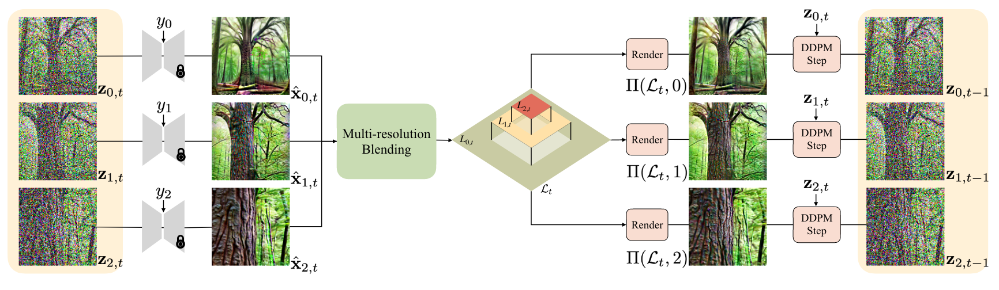
如图所示，作者的思路是操纵模型预测的 \(\mathbf x_0\)，使得各尺度重叠的部分有着相同的预测值，从而保证放大过程的连贯统一。这种融合 \(\mathbf x_0\) 的思路与 MultiDiffusion[5] 是一致的。进一步地，作者还融合了逆向过程采样的 \(\epsilon\)，使得各尺度采样出的 \(\mathbf x_{t-1}\) 在重叠部分也是相同的。
那么具体是如何融合各尺度预测的 \(\mathbf x_0\) 呢？作者分两步实现。首先，由于大尺度图像包含了小尺度图像的低分辨率部分，因此作者考虑采用 Laplacian 金字塔进行多分辨率融合，也即概览图中的 Multi-resolution Blending，如下左图所示：
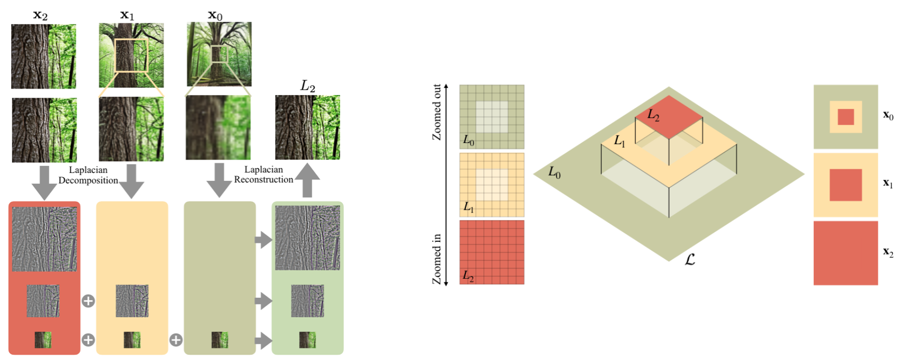
在多分辨率融合后，各尺度图像融入了更大尺度图像的低分辨率信息，可以理解为信息由上至下流动；但此时各尺度图像重叠部分并不相同。因此，作者接下来将小尺度图像由下至上覆盖到大尺度图像对应位置处，即概览图中 Render 部分，如上右图所示。
FreeControl
UCLA CVPR 2024 2023.12.12
尽管 ControlNet 等工作为文生图模型引入了空间控制而大受成功，但是存在几个问题：
- 训练 ControlNet 还是需要不少数据和算力
- 控制条件需要用已有的检测器获得，不适用于 mesh, point cloud 等难以从图像推断的条件
- ControlNet 倾向于优先满足控制条件而非文本
为此，作者提出 FreeControl[12]，能够无需训练地引入任何空间控制。FreeControl 基于这样的发现：在生成图像的过程中，模型的特征图已经能够捕获图像中的结构信息，因此我们只需要找到这些特征的空间，并施以引导即可控制生成的图像符合条件。
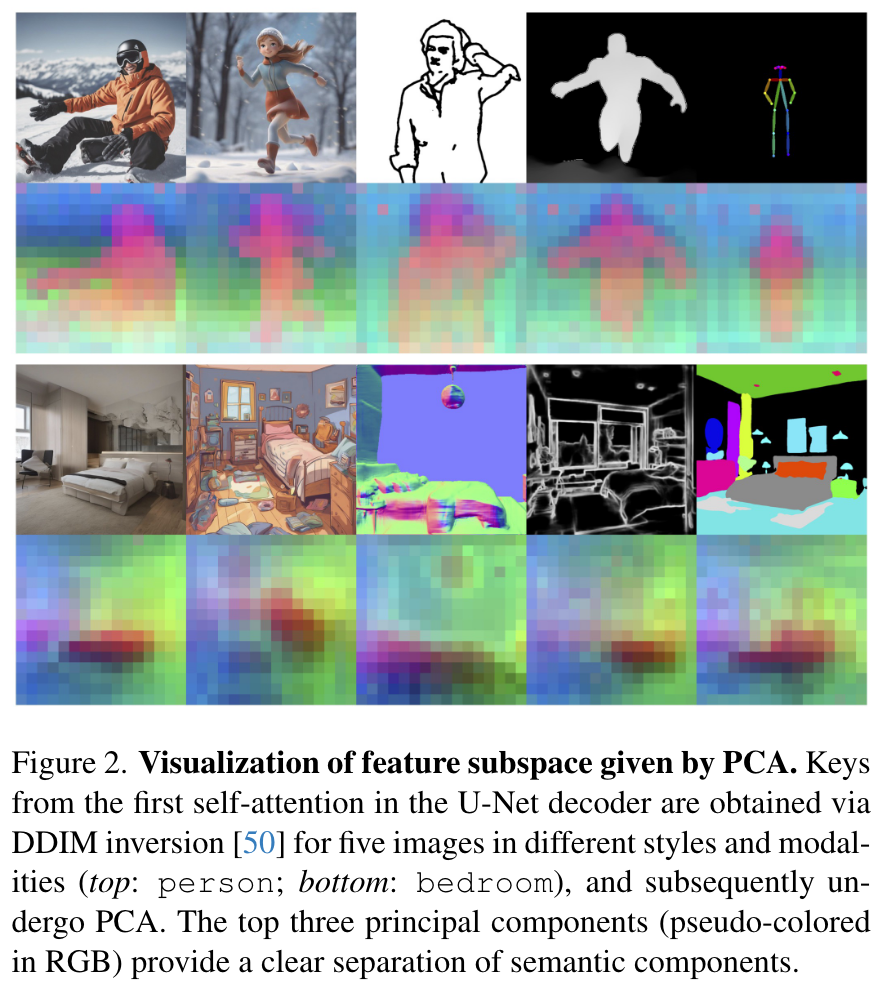
如上图所示，输入不同风格和模态的图像，先使用 DDIM inversion 取出 UNet decoder 部分的第一个 self-attention 层的 keys，然后使用 PCA 找到最大的三个分量作为 RGB 三通道显示为一张伪彩色图像。可以看见，即使是对于边缘深度骨骼等控制图像，模型感知到的特征和自然图像也是一致的。基于这个发现，作者提出了 structure guidance 来引导生成。另外，作者同时用无引导的生成过程做 appearance guidance，保证内容和风格不变。
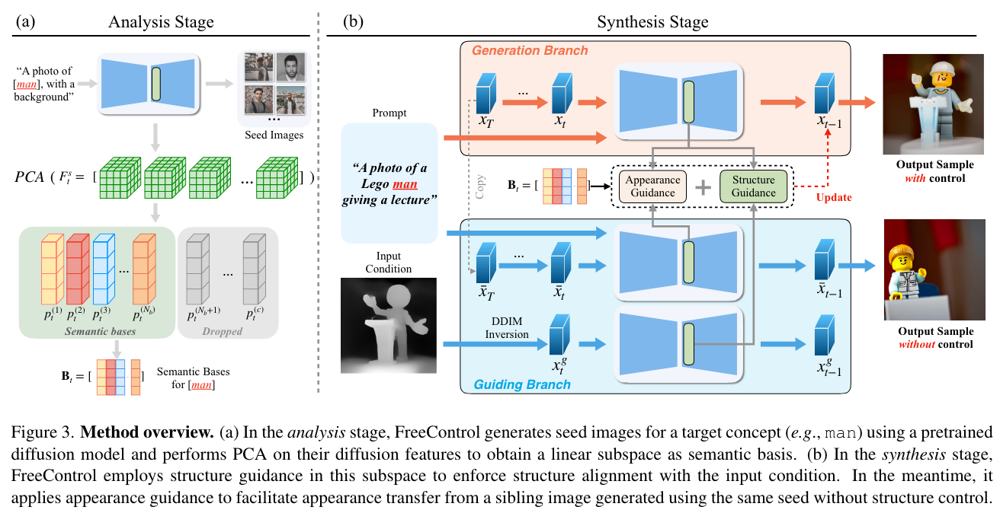
上图是方法概览。FreeControl 分为两个阶段——分析阶段和生成阶段。在分析阶段中，FreeControl 先生成若干张种子图像，拿出 decoder 的第一个 self-attention 层的对应特征，做 PCA 得到目标概念（如 man）的特征子空间。在生成阶段，FreeControl 用输入条件的特征做 structure guidance，用种子图像的特征和本身的特征做 appearance guidance.
具体而言，设引导图像为 \(\mathbf I^g\)，其特征为 \(\mathbf F^g_t\in\mathbb R^{C\times H\times W}\)，PCA 的基为 \(\mathbf B_t\)，特征在该基下的投影坐标为 \(\mathbf S_t^g\in\mathbb R^{N_b\times H\times W}\). 对于前景结构，作者进一步从 cross-attention 图中提取出了一个二值 mask \(\mathbf M\in\{0,1\}^{H\times W}\). 再设当前特征图为 \(\mathbf F_t\)，投影坐标为 \(\mathbf S_t\)，那么，structure guidance 通过下式计算： \[ g_s(\mathbf S_t;\mathbf S_t^g,\mathbf M)= \underbrace{\frac{\sum_{i,j}m_{ij}\left\Vert[\mathbf s_t]_{ij}-[\mathbf s_t^g]_{ij}\right\Vert_2^2}{\sum_{i,j}m_{ij}}}_\text{forward guidance} + w\cdot\underbrace{\frac{\sum_{i,j}(1-m_{ij})\left\Vert\max([\mathbf s_t]_{ij}-\boldsymbol\tau_t,0)\right\Vert^2_2}{\sum_{i,j}(1-m_{ij})}}_\text{backward guidance} \] 其中 \(\boldsymbol\tau_t=\max_{\{i,j\mid m_{ij}=0\}}[\mathbf s_t^g]_{ij}\). 直观来讲，forward guidance 让当前坐标靠近引导图像的坐标，backward guidance 则抑制背景的结构来突出前景。
作者发现，只使用 structure guidance 会增强低频纹理，导致不理想的效果，为此作者提出 appearance guidance. Appearance 可以用特征的空间平均来表示： \[ \mathbf v_t^{(k)}=\frac{\sum_{i,j}\sigma([s_t^{(k)}]_{ij})[\mathbf f_t]_{ij}}{\sum_{i,j}\sigma([s_t^{(k)}]_{ij})} \] 其中下标 \(i,j\) 是空间坐标，上标 \((k)\) 是通道坐标，\(\sigma(\cdot)\) 是 sigmoid 函数。生成图像 \(\mathbf I\) 的过程中，我们用同噪声、同随机种子但是无引导的图像 \(\bar{\mathbf I}\) 来做 appearance guidance： \[ g_a(\{\mathbf v_t^{(k)}\};\{\bar{\mathbf v}_t^{(k)}\})=\frac{\sum_{k=1}^{N_a}\Vert\mathbf v_t^{(k)}-\bar{\mathbf v}_t^{(k)}\Vert_2^2}{N_a} \] 最后，将 structure guidance 与 appearance guidance 放入生成过程中作为引导： \[ \hat\epsilon_t=(1+s)\epsilon_\theta(\mathbf x_t,t,c)-s\epsilon_\theta(\mathbf x_t,t,\varnothing)+\lambda_sg_s+\lambda_ag_a \]
点击查看 FreeControl 的生成样例（摘自官网）

AnyText
Alibaba ICLR 2024 spotlight 2023.12.15
尽管当下的文生图大模型能力非常强大，但生成文字一直是一个没有解决的问题。为此，阿里提出 AnyText[13] 和 AnyWord-3M 数据集，使得在图像中生成准确可控的多语言文字成为了可能。
作者首先剖析了当下文生图模型不能很好生成文字的原因：
- 缺乏直接描述图片中文字内容的数据集；
- 模型使用的文本编码器，如 CLIP，使用的是 vocabulary-based tokenizer，不能直接获取每一个独立的字母；
- 没有特别针对文本生成设计损失函数。
为了解决这些问题，作者设计了如下的 AnyText 整体框架：
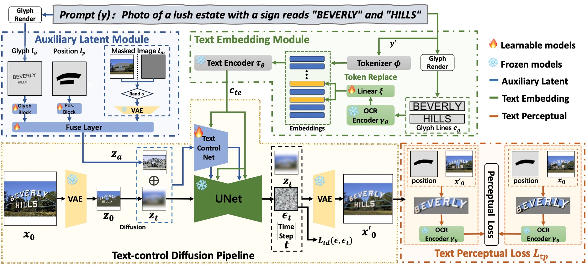
可以看见，AnyText 由四大部分组成。整个框架的基础是 Stable Diffusion，为了将文字控制引入 SD，作者考虑了两种方式——一是以图像的方式，将文字的字形和位置编码在控制图像中；二是以 embedding 的方式，用字形的 embedding 替换原本的文本 embedding. 以图像方式控制的那一路自然考虑使用 ControlNet 架构，而以 embedding 方式控制的那一路就沿用原本 text embedding 融入的方法即可，此二者对应图中 Auxiliary Latent Module 和 Text Embedding Module 两部分。最后作者还针对文本生成设计了一个损失函数，拉近生成的文字与真实的文字在 OCR 编码器中的感知距离。
Auxiliary Latent Module
AnyText 考虑三种控制图像——字形、位置和掩码图。由于在弯曲、非规则区域渲染字形并不方便，因此字形是在矩形包络框内渲染的。不过，结合位置图像标注的文字位置，模型依旧能够生成弯曲、非规则区域的文字。掩码图用于指示图中那些部分不应被改变，因此在文字编辑应用中只遮盖文字区域，而在文生图应用中就全部遮盖住。
为了将这些控制图像融合成一个控制图像给到 ControlNet，作者搭建了两个下采样卷积网络来下采样字形图和位置图，用 VAE Encoder 来下采样掩码图，最后用一层卷积将三者映射到 ControlNet 对应的输入维度。
Text Embedding Module
Stable Diffusion 等模型使用的文本编码器的基本单位是 token 而不是字符，因而很难控制文字书写。为此，作者将字形渲染为图片后，使用 OCR 检测模型的特征作为 embedding，经线性映射后替代掉原本的 embedding，最后一同给到 CLIP text encoder. OCR 模型有能力识别不同语言的文字，因此使得 AnyText 能够生成多语言的文字。
Text Perceptual Loss
基于上文文字的位置图，我们可以提取出生成图片和真实图片有文字的部分。作者希望引入额外的监督信号来保证文字的正确性（并不关注背景、颜色、风格等），因此采用二者在 OCR 编码器中的感知距离作为损失函数。另外，由于时间步 t 对文字质量有影响，因此该损失要根据时间步加权。
最后，为了训练 AnyText，作者构建了 AnyWord-3M 数据集，详细信息请参阅论文。
点击查看 AnyText 的生成样例（摘自官方 repo）

References
- Li, Yuheng, Haotian Liu, Qingyang Wu, Fangzhou Mu, Jianwei Yang, Jianfeng Gao, Chunyuan Li, and Yong Jae Lee. Gligen: Open-set grounded text-to-image generation. In Proceedings of the IEEE/CVF Conference on Computer Vision and Pattern Recognition, pp. 22511-22521. 2023. ↩︎
- Zhang, Lvmin, and Maneesh Agrawala. Adding conditional control to text-to-image diffusion models. arXiv preprint arXiv:2302.05543 (2023). ↩︎
- Mou, Chong, Xintao Wang, Liangbin Xie, Yanze Wu, Jian Zhang, Zhongang Qi, and Ying Shan. T2i-adapter: Learning adapters to dig out more controllable ability for text-to-image diffusion models. In Proceedings of the AAAI Conference on Artificial Intelligence, vol. 38, no. 5, pp. 4296-4304. 2024. ↩︎
- Jiménez, Álvaro Barbero. Mixture of diffusers for scene composition and high resolution image generation. arXiv preprint arXiv:2302.02412 (2023). ↩︎
- Bar-Tal, Omer, Lior Yariv, Yaron Lipman, and Tali Dekel. Multidiffusion: Fusing diffusion paths for controlled image generation. (2023). ↩︎
- Huang, Lianghua, Di Chen, Yu Liu, Yujun Shen, Deli Zhao, and Jingren Zhou. Composer: Creative and controllable image synthesis with composable conditions. arXiv preprint arXiv:2302.09778 (2023). ↩︎
- Qin, Can, Shu Zhang, Ning Yu, Yihao Feng, Xinyi Yang, Yingbo Zhou, Huan Wang et al. UniControl: A Unified Diffusion Model for Controllable Visual Generation In the Wild. arXiv preprint arXiv:2305.11147 (2023). ↩︎
- Zhao, Shihao, Dongdong Chen, Yen-Chun Chen, Jianmin Bao, Shaozhe Hao, Lu Yuan, and Kwan-Yee K. Wong. Uni-ControlNet: All-in-One Control to Text-to-Image Diffusion Models. arXiv preprint arXiv:2305.16322 (2023). ↩︎
- Chen, Xi, Lianghua Huang, Yu Liu, Yujun Shen, Deli Zhao, and Hengshuang Zhao. Anydoor: Zero-shot object-level image customization. arXiv preprint arXiv:2307.09481 (2023). ↩︎
- Ye, Hu, Jun Zhang, Sibo Liu, Xiao Han, and Wei Yang. Ip-adapter: Text compatible image prompt adapter for text-to-image diffusion models. arXiv preprint arXiv:2308.06721 (2023). ↩︎
- Wang, Xiaojuan, Janne Kontkanen, Brian Curless, Steve Seitz, Ira Kemelmacher, Ben Mildenhall, Pratul Srinivasan, Dor Verbin, and Aleksander Holynski. Generative Powers of Ten. arXiv preprint arXiv:2312.02149 (2023). ↩︎
- Mo, Sicheng, Fangzhou Mu, Kuan Heng Lin, Yanli Liu, Bochen Guan, Yin Li, and Bolei Zhou. FreeControl: Training-Free Spatial Control of Any Text-to-Image Diffusion Model with Any Condition. arXiv preprint arXiv:2312.07536 (2023). ↩︎
- Tuo, Yuxiang, Wangmeng Xiang, Jun-Yan He, Yifeng Geng, and Xuansong Xie. AnyText: Multilingual Visual Text Generation And Editing. arXiv preprint arXiv:2311.03054 (2023). ↩︎